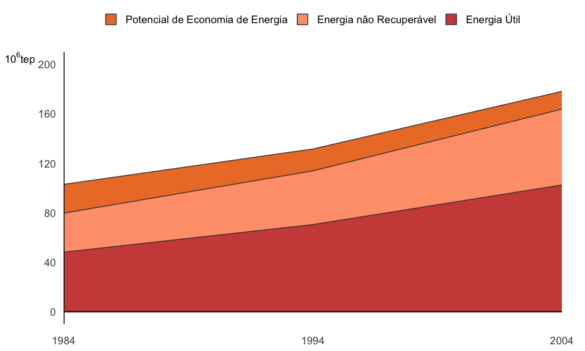

Anexo IV: Balanço de Energia Útil

O Balanço de Energia Útil (BEU) é um estudo que permite processar as informações setoriais do Balanço Energético Nacional (BEN), de consumo de energia, para obter estimativas da Energia Final destinada aos Usos Finais Força Motriz, Calor de Processo, Aquecimento Direto, Refrigeração, Iluminação, Eletroquímica e Outros Usos e, com base nos rendimentos do primeiro processo de transformação energética, estimar a Energia Útil
A Energia Útil é apurada considerando os Usos Finais, as formas de Energia Final e os Setores de atividades contemplados no BEN. A Figura 1 resume os resultados do BEU para os anos de 1984, 1994 e 2004.
A Energia Final é composta pela soma de duas parcelas: a Energia Útil e a Energia Perdida. Esta, por sua vez é composta pela soma do Potencial de Economia de Energia (PEE) com a Energia não Recuperável (EÑR). A Energia Útil é estimada com base nas eficiências médias das instalações de cada setor de atividade, existentes no ano do estudo. O PEE é estimado com base nas eficiências das instalações mais modernas de cada setor de atividade, existentes no ano do estudo. A EÑR é calculada por diferença.
A figura mostra que a Energia Final e a Energia Útil têm aumentado ao longo dessas duas décadas. Por outro lado, o Potencial de Economia de Energia diminui, à medida que os rendimentos dos processos se aproximam de seus paradigmas.
A relação Energia Final / Energia Útil tem a dimensão de rendimento energético. O BEU permite avaliar o rendimento energético global da sociedade brasileira e os rendimentos específicos dos setores de atividade, das diferentes formas de energia e dos Usos Finais. A Tabela 1 apresenta as evoluções dos rendimentos energéticos globais, dos principais setores de atividades, dos principais energéticos e dos principais Usos Finais.
A tabela seguinte mostra que os rendimentos energéticos aumentaram ao longo dessas décadas. Esse aumento se deveu em parte à evolução tecnológica dos equipamentos e, em parte, à mudança da matriz energética do País que migrou dos energéticos de uso menos eficiente para os de uso mais eficiente
O BEU permite avaliar separadamente os efeitos da evolução da tecnologia e da sociedade no consumo energético nacional. Para avaliar apenas os efeitos da Sociedade foram considerados os dados de entrada (dados de Energia Final - que caracterizam o contexto da sociedade) referentes aos anos de 1984, 1994 e 2004, porém com os rendimentos (que caracterizam o contexto da tecnologia) referentes ao ano de 2004. Para avaliar apenas os efeitos da tecnologia foram considerados os dados de entrada referentes a 2004, porém com os rendimentos de 1984, 1994 e 2004. Os resultados obtidos em termos de rendimentos médios estão apresentados na Tabela 1.
A Tabela 2 permite verificar por simples inspeção que o efeito da tecnologia é, em geral, maior do que o efeito da sociedade. Para apurar quantitativamente a participação desses efeitos na variação do rendimento é necessário ainda, fazer um processamento. A seguir se explica esse processamento através do exemplo da variação do rendimento Global no período de 1994 a 2004:
Variação Total do Rendimento = 57,5 (Tab IV.2) - 53,9 (Tab IV.1) = 3,6
Variação devida ao Efeito Tecnológico = 57,5 (Tab IV.2) – 54,3 (Tab IV.2) = 3,2
Variação devida ao Efeito Sociedade = 57,5 (Tab IV.2) – 56,9 (Tab IV.2) = 0,6
Verificação: 3,2 + 0,6 = 3,8 ~ Variação Total do Rendimento
Na Tabela 3 são apresentadas as variações referentes a todos os segmentos considerados neste estudo.
Pode-se verificar que há algumas variações, em geral pequenas, entre os valores da coluna Variação Total e os da coluna Verificação. Essas variações refletem pequenos erros decorrentes de inconsistências entre dados de entrada e os coeficientes técnicos do modelo que apareceram em função desta simulação.
É interessante observar que, nos segmentos Residencial e Aquecimento Direto, no período de 1984 a 2004, o efeito da Sociedade é significativamente maior do que nos outros segmentos. Essa variação se deve ao processo de substituição dos fogões a lenha no setor residencial que ocorreu ao longo da década de 1984 a 1994.
O efeito da Tecnologia é particularmente significativo no caso de segmentos como o Setor Industrial em que a competitividade é um indutor do aumento de eficiência ou dos insumos energéticos usados nesse setor.